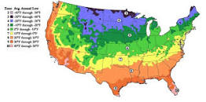

What to Plant in Your Zone
The standard by which gardeners and growers can determine which plants are most likely to thrive at a location. There are maps based on the average annual minimum winter temperature, divided into 10-degree F zones and further divided into 5-degree F half-zones. Determining which zone you are in can determine what you can and cannot grow easily in your state. There are 13 growing zones and each state can be a apart of more than one zone depending on the climate.
Different Zones According to State
How Climate Affects Plants
Climate is one of the main factors of growing plants and why many people do not start. Without the knowledge on when and where you can grow a certain plant can make gardening seem difficult. Knowing how percipitation, temperature, and soil can affect you garden can be beneficial to keeping a garden all througout the year. One way climate affects plants is the amount of percipitation that falls in a certain location. Another way is the temperature, if a plant gets too cold or does not get enough sunlight it may never grow, but there are some plants who do not need a lot of heat or sunlight to grow.